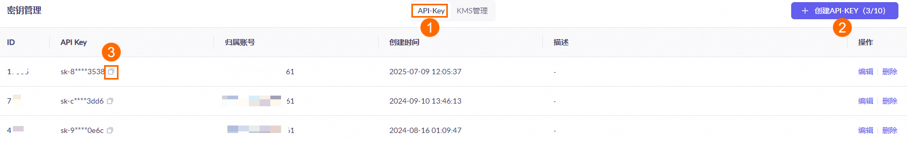
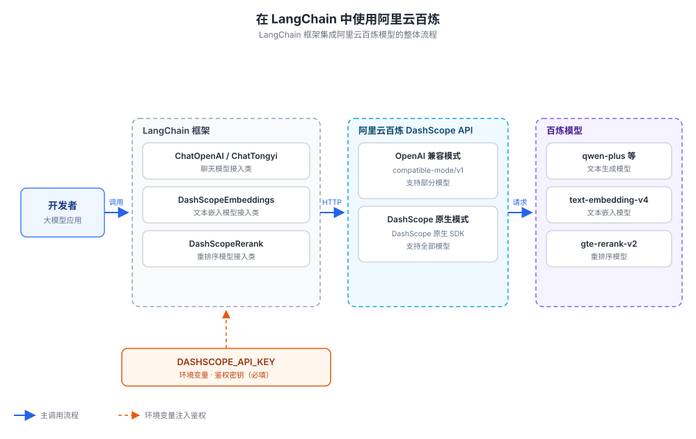
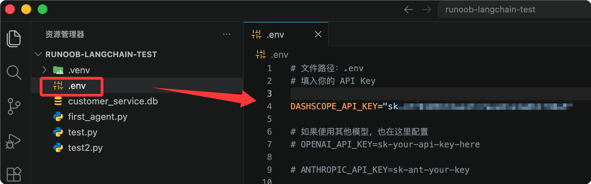

LangChain と阿里百炼の統合
LangChain は現在最も主流の大規模モデルアプリケーション開発フレームワークであり、統一されたコンポーネントインターフェースを通じて、開発者がプロンプト、モデル、ツールチェーン、エージェントアプリケーションを迅速に構築するのを支援します。
阿里云百炼（DashScope）は阿里云の大規模モデルサービスプラットフォームであり、通義千問（qwen）シリーズのチャットモデル、テキスト埋め込みモデル、再ランク付けモデルを提供しています。
この記事では、百炼モデルを LangChain に接続する方法を説明し、チャットモデル、テキスト埋め込みモデル、再ランク付けモデルの3つのカテゴリを網羅し、Python、JavaScript、Java の3言語の完全な例を示します。
事前準備
阿里云百炼モデルサービスを有効化し、API-KEY を取得する必要があります。
まず、阿里云のメインアカウントを使用して百炼モデルサービスプラットフォームにアクセスできます：https://bailian.console.aliyun.com/次に、右上隅のログインをクリックし、ログインが成功したら右上隅の歯車⚙️アイコンをクリックして API key を選択し、API key をコピーします。ない場合は API key を作成することもできます：


実際に作業を始める前に、2つの重要な概念を理解しましょう：LangChain の「モデル接続クラス」と、百炼の「2つの接続モード」です。
モデル接続クラス
LangChain は、異なるベンダーのモデルを統一された「接続クラス」にカプセル化します。
アプリケーションコードは統一インターフェースに対してプログラミングされ、ベンダーを切り替える際は接続クラスとパラメータを変更するだけで、ビジネスロジックはほとんど変更する必要がありません。
チャットモデルを例にとると、Python 側には ChatOpenAI と ChatTongyi という2つの接続クラスがあり、それぞれ百炼の OpenAI 互換モードと DashScope ネイティブモードに対応しています。
2つの接続モード
百炼は2セットの接続プロトコルを提供しており、異なるプロトコルを選択すると、異なる LangChain 接続クラスに対応します。
OpenAI 互換モード：インターフェースプロトコルが OpenAI と一致しているため、OpenAI プロトコルをサポートするフレームワークはすべて直接接続でき、接続コストが最も低くなります。
DashScope ネイティブモード：百炼独自の DashScope プロトコルを使用し、デプロイ後のカスタムモデルを含む百炼のすべてのテキスト生成モデルを呼び出すことができます。
全体的な接続アーキテクチャは次の図のとおりです：

「OpenAI 互換インターフェース」とは、ベンダーの HTTP インターフェースプロトコルが OpenAI と一致していることを指します。
プロトコルが互換性があれば、OpenAI 向けに書かれたコードやツールはすべて直接再利用でき、インターフェースアドレスを修正するだけで済みます。
環境変数の設定
すべての言語と接続方式は、環境変数を統一的に使用しますDASHSCOPE_API_KEYキーを保存します。
Linux / macOS ではターミナルでエクスポート：
export DASHSCOPE_API_KEY="sk-你的百炼APIKey"
Windows（CMD）での設定方法：
set DASHSCOPE_API_KEY=sk-你的百炼APIKey
エクスポートコマンドをシェル設定ファイル（例：~/.bashrc、~/.zshrc）に書き込むことをお勧めします。ターミナルを開くたびに再設定する必要がなくなります。
.env ファイルによる設定（推奨）
より推奨される方法は、キーをプロジェクトのルートディレクトリの .env ファイルに書き込み、python-dotenv と組み合わせて環境変数に自動的にロードすることです。
キーとコードを分離し、.gitignore と組み合わせることで誤ったコミットを防ぎ、複数人での共同作業時にもそれぞれが管理しやすくなります。
プロジェクトのルートディレクトリに .env ファイルを作成します：
# 文件路径：项目根目录/.env DASHSCOPE_API_KEY=sk-你的百炼APIKey
たとえば、私たちがテストするプロジェクトサンプル-langchain-testの下に作成.envファイルに設定を追加します：

python-dotenv をインストール：
pip install python-dotenv
Python コードの先頭で .env ファイルをロード：
例
load_dotenv() # プロジェクトのルートディレクトリの .env ファイルを読み込み、環境変数として注入
ロード後、コード内の os.getenv("DASHSCOPE_API_KEY") でキーを読み取ることができ、手動の export と同じ効果があります。
「チャットモデル」のセクションの例で、このロード方法をすでに示しました。
.env は機密ファイルです。.gitignore に追加（.env と1行記述）して、キーがバージョン管理リポジトリにコミットされないようにしてください。
サンプル内のキーを実際のキーに置き換え、他人に共有しないでください。
2つの接続方式の比較
まず比較表を見て、必要に応じて接続方式を選択してください。
| 比較項目 | OpenAI 互換モード | DashScope ネイティブモード |
|---|---|---|
| 接続原理 | OpenAI プロトコルの接続クラスを再利用 | DashScope ネイティブ SDK を使用 |
| 対応モデル | 一部のモデルのみ | すべてのテキスト生成モデルとデプロイ後のモデル |
| Python 接続クラス | ChatOpenAI | ChatTongyi |
| JavaScript 接続クラス | ChatOpenAI | ChatAlibabaTongyi |
| Java 接続クラス | OpenAiChatModel | QwenChatModel |
| 適用シーン | 既存の OpenAI コードを迅速に切り替えたい場合 | 完全なモデル機能が必要、またはデプロイモデルを使用する場合 |
2つのモードは同じドメイン dashscope.aliyuncs.com を使用しますが、違いはパスにあります：OpenAI 互換モードのパスは /compatible-mode/v1 で、DashScope ネイティブモードのパスは SDK に組み込まれています。
チャットモデル（Chat Model）
チャットモデルは最も一般的に使用されるモデルの一種で、マルチターン対話、Q&A、コンテンツ生成などのタスクに使用されます。
以下では言語ごとに接続方式を説明します。サンプルモデルは統一して qwen-plus を使用しますが、必要に応じて変更できます。
Python：OpenAI 互換方式
langchain_openai パッケージの ChatOpenAI 接続クラスを使用して、百炼を OpenAI サービスとして呼び出します。
まず依存関係をインストール：
pip install langchain_openai
サンプルコード：
例
from dotenv import load_dotenv # .env ファイルの設定を読み込む
import os
load_dotenv() # プロジェクトのルートディレクトリの .env からキーなどの環境変数をロード
# チャットモデルインスタンスを作成し、OpenAI 互換プロトコルで百炼に接続
chatLLM = ChatOpenAI(
api_key=os.getenv("DASHSCOPE_API_KEY"), # 環境変数から百炼 API Key を読み取る（必須）
base_url="https://dashscope.aliyuncs.com/compatible-mode/v1", # 百炼 OpenAI 互換インターフェースアドレス（必須）
model="qwen-plus", # モデル名（必須）、ここでは qwen-plus を例とする
# その他のオプションパラメータ：temperature（生成温度）、max_tokens（最大出力長）など
)
# マルチターン対話のメッセージリストを構築
messages = [
{"role": "system", "content": "You are a helpful assistant."}, # システムメッセージ、アシスタントの役割を設定
{"role": "user", "content": "あなたは誰ですか？"}, # ユーザーメッセージ、質問内容
]
# 呼び出しを実行し、構造化レスポンスオブジェクトを返す
response = chatLLM.invoke(messages)
print(response.model_dump_json())
出力結果（一部のフィールド省略）：
{
"content": "我是通义千问，由阿里云开发的大语言模型，可以回答你的问题、协助创作、提供建议等。",
"usage": { "prompt_tokens": 12, "completion_tokens": 28, "total_tokens": 40 }
}
呼び出しが成功すると AIMessage オブジェクトが返され、model_dump_json() で JSON にシリアライズして、完全なレスポンスを確認できます。
Python：DashScope ネイティブ方式
langchain-community パッケージの ChatTongyi アクセスクラスを使用し、DashScope ネイティブプロトコルでストリーミング出力に対応します。
ChatTongyi は langchain-community コミュニティパッケージに由来し、このパッケージと dashscope はメンテナンスを終了しています。
新規プロジェクトでは、OpenAI 互換方式の ChatOpenAI による接続を優先的に使用することをお勧めします。DashScope のネイティブ機能（モデルのデプロイなど）が必要な場合にのみ、この方式を検討してください。
まず依存関係をインストールします：
pip install langchain-community dashscope
サンプルコード：
例
from langchain_core.messages import HumanMessage
from dotenv import load_dotenv # .env ファイルの設定を読み込む
import os
load_dotenv() # プロジェクトルートの .env から API キーなどの環境変数を読み込む
# 通義千問チャットモデルを作成し、DashScope ネイティブプロトコルを使用
chatLLM = ChatTongyi(
model="qwen-plus", # モデル名（必須）
dashscope_api_key=os.getenv("DASHSCOPE_API_KEY"), # 環境変数から API キーを読み取る（必須）
streaming=True, # ストリーミング出力を有効化
)
# ストリーミング呼び出しで、応答内容を段階的に受信して出力
res = chatLLM.stream([HumanMessage(content="hi")], streaming=True)
for r in res:
print("chat resp:", r.content)
出力結果：
chat resp: 你好 chat resp: ！我是通义千问，有什么可以帮您的吗？
ストリーミング出力により、モデルは生成と同時に内容を段階的に返すため、タイプライター効果が必要なチャットインターフェースに適しています。
テキスト埋め込みモデル（Embedding Model）
埋め込みモデルはテキストを意味ベクトルに変換し、RAG（検索拡張生成）やセマンティック検索などのアプリケーションの基盤となります。
モデル選定
百錬は複数バージョンの埋め込みモデルを提供しており、MTEB と CMTEB の2つの評価指標で効果を比較できます。数値が大きいほど優れています。
| モデル | MTEB | MTEB（検索タスク） | CMTEB | CMTEB（検索タスク） |
|---|---|---|---|---|
| text-embedding-v1 | 58.30 | 45.47 | 59.84 | 56.59 |
| text-embedding-v2 | 60.13 | 49.49 | 62.17 | 62.78 |
| text-embedding-v3（1024 次元） | 63.39 | 55.41 | 68.92 | 73.23 |
| text-embedding-v4（1024 次元） | 68.36 | 59.30 | 70.14 | 73.98 |
text-embedding-v3 と text-embedding-v4 は LangChain から呼び出す際にベクトル次元を指定できず、デフォルトで 1024 次元のベクトルを出力します。
バージョンが高いほど効果が良いため、v4 を優先的に選択してください。
Python の例
百錬の埋め込みインターフェースは OpenAI インターフェース仕様と互換性があり、langchain-openai パッケージの OpenAIEmbeddings アクセスクラスを直接使用し、base_url を百錬の互換エンドポイントに指定するだけで済みます。
メンテナンスが終了した langchain-community と dashscope の2つのパッケージをインストールする必要はありません。
まず依存関係をインストールします：
pip install langchain-openai
OpenAIEmbeddings には3つの重要なパラメータが必要です：model（埋め込みモデル名）、api_key（百錬の API キー）、base_url（百錬の OpenAI 互換エンドポイント）。
base_url は https://dashscope.aliyuncs.com/compatible-mode/v1 に固定されており、チャットモデルの互換エンドポイントと同じです。
サンプルコード：
例
from dotenv import load_dotenv # .env ファイルの設定を読み込む
import os
load_dotenv() # プロジェクトルートの .env から API キーなどの環境変数を読み込む
# 埋め込みモデルインスタンスを作成し、OpenAI 互換プロトコルで百錬に接続
# chunk_size=10：百錬 Embedding インターフェースは1回のリクエストで最大10件のテキストを受け付け、
# OpenAIEmbeddings はデフォルトで一度に1000件をまとめて送信するため、ナレッジベースが少し大きいと上限超過エラーになります。
embeddings = OpenAIEmbeddings(
model="text-embedding-v4", # 埋め込みモデル名（必須）、ここでは v4 を例にしています
api_key=os.getenv("DASHSCOPE_API_KEY"), # 環境変数から百錬の API キーを読み取る（必須）
base_url="https://dashscope.aliyuncs.com/compatible-mode/v1", # 百錬の OpenAI 互換エンドポイント（必須）
check_embedding_ctx_length=False,
chunk_size=10,
)
# 単一のクエリテキストをベクトル化
text = "This is a test document."
query_result = embeddings.embed_query(text)
print("文本向量长度：", len(query_result), sep='')
# 複数のドキュメントを一括でベクトル化
doc_results = embeddings.embed_documents(
[
"Hi there!",
"Oh, hello!",
"What's your name?",
"My friends call me World",
"Hello World!"
])
print("文本向量数量：", len(doc_results), "，文本向量长度：", len(doc_results[0]), sep='')
出力結果：
文本向量长度：1024 文本向量数量：5 ，文本向量长度：1024
embed_query はユーザークエリをベクトル化するために使用し、embed_documents は候補ドキュメントを一括でベクトル化するために使用します。両者の出力ベクトル次元が一致して初めて類似度を計算できます。
再ランク付けモデル（Reranker Model）
再ランキングモデルは検索結果に対して2回目のスコアリングとソートを行い、RAG アプリケーションの回答品質を大幅に向上させることができます。
モデルパラメータ
百錬は以下の再ランキングモデルを提供しています。言語、コスト、シナリオに応じて選択してください：
| モデル | 最大 Document 数 | 1件あたりの最大入力 | 対応言語 | 単価（1,000 Token あたり） | 適用シナリオ |
|---|---|---|---|---|---|
| qwen3-vl-rerank | 100 | 8,000 Token | 中国語、英語、日本語、韓国語など33の主要言語 | 画像 0.0018 元 / テキスト 0.0007 元 | 画像クラスタリング、クロスモーダル検索、画像検索 |
| qwen3-rerank | 500 | 4,000 Token | 中国語、英語、スペイン語、フランス語、日本語、韓国語など100以上の言語 | 0.0005 元 | テキストセマンティック検索、RAG アプリケーション |
| gte-rerank-v2 | — | 30,000 Token | 中国語、英語、日本語、韓国語、タイ語など50以上の言語 | 0.0008 元 | 長文テキストの再ランキング |
Python の例
langchain-community パッケージの DashScopeRerank アクセスクラスを使用します。
このサンプルは langchain-community コミュニティパッケージの DashScopeRerank を使用しています。
langchain-community と dashscope はメンテナンスを終了しているため、新規プロジェクトでは百錬公式が提供する代替接続方式を確認してください。
まず依存関係をインストールします：
pip install langchain-community dashscope
サンプルコード：
例
from dotenv import load_dotenv # .env ファイルの設定を読み込む
load_dotenv() # プロジェクトルートの .env から API キーなどの環境変数を読み込む
# 検索から返された候補テキストのリストをシミュレート
sequence = ["サンプル はプログラミングチュートリアルを提供する中国語の学習ウェブサイトです", "text2", "text3"]
# 再ランキングモデルインスタンスを作成
reranker = DashScopeRerank(
model="gte-rerank-v2", # 再ランキングモデル名（必須）
)
# クエリに基づいて候補テキストを再ランキングし、スコアが最も高い top_n 件を返す
print(reranker.rerank(documents=sequence, query="Python とは何か", top_n=2))
rerank メソッドは query に基づいて候補ドキュメントを再スコアリングしてソートし、top_n で返却件数を指定します。RAG 検索後の精密ランキング段階でよく使用されます。
JavaScript と Java の接続
JavaScript：OpenAI 互換方式
Node.js 側では @langchain/openai パッケージの ChatOpenAI アクセスクラスを使用します。
まず依存関係をインストールします：
npm install @langchain/openai @langchain/core
サンプルコード：
例
// チャットモデルインスタンスを作成し、OpenAI 互換プロトコルで百錬に接続
const llm = new ChatOpenAI({
model: "qwen-plus", // モデル名（必須）、ここでは qwen-plus を例にしています
apiKey: process.env.DASHSCOPE_API_KEY, // 環境変数から百錬の API キーを読み取る（必須）
configuration: {
baseURL: "https://dashscope.aliyuncs.com/compatible-mode/v1", // 百錬の OpenAI 互換インターフェースアドレス（必須）
},
});
// チャット呼び出しを実行し、AI メッセージオブジェクトを返す
const aiMsg = await llm.invoke([
{ role: "system", content: "You are a helpful assistant that translates English to French. Translate the user sentence." }, // システムメッセージ
{ role: "user", content: "I love programming." }, // ユーザーメッセージ
]);
console.log('---------------------------');
console.log(aiMsg.content);
出力結果：
--------------------------- J'adore la programmation.
JavaScript：DashScope ネイティブ方式
@langchain/community パッケージの ChatAlibabaTongyi アクセスクラスを使用します。
まず依存関係をインストールします：
例
サンプルコード：
例
import { HumanMessage } from "@langchain/core/messages";
// デフォルトモデルは qwen-turbo、API キーのみ提供すればよい
const qwenTurbo = new ChatAlibabaTongyi({
alibabaApiKey: process.env.DASHSCOPE_API_KEY, // 環境変数から API キーを読み取る（必須）
});
// qwen-plus を使用し、temperature などの生成パラメータを追加指定可能
const qwenPlus = new ChatAlibabaTongyi({
model: "qwen-plus", // モデル名（必須）
temperature: 1, // 生成温度。値が大きいほど出力が多様になる
alibabaApiKey: process.env.DASHSCOPE_API_KEY, // 環境変数から API キーを読み取る（必須）
});
const messages = [new HumanMessage("Hello")];
// 2つのモデルをそれぞれ呼び出して結果を出力
const res = await qwenTurbo.invoke(messages);
const res2 = await qwenPlus.invoke(messages);
console.log('---------------------------');
console.log(res.content);
console.log('---------------------------');
console.log(res2.content);
Java：OpenAI 互換方式（LangChain4j）
Java エコシステムでは LangChain4j フレームワークを使用し、langchain4j-open-ai モジュールを介して百錬に接続します。
LangChain4j 1.0.0-beta3 は Java 17 以降が必要です。
Java 11 でコンパイルすると Unsupported class file major version 61 エラーが発生します。JDK をアップグレードすれば解決できます。
pom.xml に依存関係を追加します：
<!-- 文件路径：pom.xml -->
<dependency>
<groupId>dev.langchain4j</groupId>
<artifactId>langchain4j-open-ai</artifactId>
<version>1.0.0-beta3</version>
</dependency>
サンプルコード：
例
import dev.langchain4j.data.message.UserMessage;
import dev.langchain4j.model.chat.ChatLanguageModel;
import dev.langchain4j.model.openai.OpenAiChatModel;
public class LangChainOpenAITest {
public static void main(String[] args) {
// チャットモデルを作成し、OpenAIプロトコルを再利用して百炼（DashScope）に接続する
ChatLanguageModel model = OpenAiChatModel.builder()
.apiKey(System.getenv("DASHSCOPE_API_KEY")) // 環境変数からAPIキーを読み取る（必須）
.baseUrl("https://dashscope.aliyuncs.com/compatible-mode/v1") // 百炼 OpenAI互換アドレス（必須）
.modelName("qwen-plus") // モデル名（必須）
.build();
SystemMessage systemMessage = SystemMessage.from("あなたは心理の専門家です"); // システムメッセージ、ロールを設定
UserMessage userMessage = UserMessage.from("こんにちは"); // ユーザーメッセージ
System.out.println(model.chat(systemMessage, userMessage).aiMessage().text());
}
}
Java：DashScope ネイティブ方式（LangChain4j）
langchain4j-community-dashscope モジュールを使用し、通常呼び出しとストリーミング呼び出しをサポートします。
pom.xml に依存関係を追加します：
<!-- 文件路径：pom.xml -->
<dependency>
<groupId>dev.langchain4j</groupId>
<artifactId>langchain4j-community-dashscope</artifactId>
<version>1.0.0-beta3</version>
</dependency>
サンプルコード（通常呼び出しとストリーミング呼び出し）：
例
import dev.langchain4j.community.model.dashscope.QwenStreamingChatModel;
import dev.langchain4j.data.message.ChatMessage;
import dev.langchain4j.data.message.SystemMessage;
import dev.langchain4j.data.message.UserMessage;
import dev.langchain4j.model.chat.ChatLanguageModel;
import dev.langchain4j.model.chat.StreamingChatLanguageModel;
import dev.langchain4j.model.chat.request.ChatRequest;
import dev.langchain4j.model.chat.response.ChatResponse;
import dev.langchain4j.model.chat.response.StreamingChatResponseHandler;
public class LangChainDashScopeTest {
public static void main(String[] args) {
chatLanguageModelTest(); // 通常呼び出し
// streamingChatLanguageModelTest(); // ストリーミング呼び出し、必要に応じてコメントを解除
}
// 通常呼び出し：一度に完全な結果を返す
public static void chatLanguageModelTest() {
ChatLanguageModel qwenModel = QwenChatModel.builder()
.apiKey(System.getenv("DASHSCOPE_API_KEY")) // 環境変数からAPIキーを読み取る（必須）
.modelName("qwen-plus") // モデル名（必須）
.build();
// リクエストを構築し、メッセージを時系列で並べる
ChatRequest request = ChatRequest.builder()
.messages(new ChatMessage[]{
SystemMessage.from("あなたは心理の専門家です"), // システムメッセージ
UserMessage.from("こんにちは") // ユーザーメッセージ
})
.build();
System.out.println(qwenModel.chat(request).aiMessage().text());
}
// ストリーミング呼び出し：生成されたテキストを分割して受け取る
public static void streamingChatLanguageModelTest() {
StreamingChatLanguageModel model = QwenStreamingChatModel.builder()
.apiKey(System.getenv("DASHSCOPE_API_KEY"))
.modelName("qwen-plus")
.build();
model.chat("こんにちは", new StreamingChatResponseHandler() {
@Override
public void onPartialResponse(String s) { // 生成のたびにコールバックされる
System.out.println(s);
}
@Override
public void onCompleteResponse(ChatResponse chatResponse) { // 生成完了
System.out.println("会話終了");
System.exit(0);
}
@Override
public void onError(Throwable throwable) { // 例外発生
System.out.println("異常が発生しました");
System.exit(0);
}
});
}
}
LangChain4j は Spring Boot Starter も提供しており、手動でモデルオブジェクトを構築する必要はなく、application.properties で設定するだけです。
例
# APIキー（必須）
langchain4j.open-ai.chat-model.api-key=${DASHSCOPE_API_KEY}
# モデル名（必須）
langchain4j.open-ai.chat-model.model-name=qwen-plus
# OpenAI互換インターフェースアドレス（必須）
langchain4j.open-ai.chat-model.base-url=https://dashscope.aliyuncs.com/compatible-mode/v1
# サービスポート
server.port=9000
DashScope ネイティブ方式の Starter の設定項目は同名で、プレフィックスを langchain4j.community.dashscope.chat-model に変更するだけでよく、base-url の設定は不要です。
注意事項 / よくある質問
導入中に発生した問題は、以下のリストと照合して迅速に特定できます。
Java のバージョン要件
LangChain4j 1.0.0-beta3 は Java 17 以降が必要です。
Java 11 でコンパイルすると Unsupported class file major version 61 エラーが発生します。JDK をアップグレードすれば解決できます。
OpenAI 互換モードは一部のモデルのみをサポート
OpenAI互換インターフェースは百炼の一部モデルのみをサポートします。完全なリストは公式ドキュメントを参照してください。
呼び出すモデルがサポート範囲にない場合は、DashScope ネイティブモードに切り替えてください。
埋め込みベクトルのデフォルト次元
text-embedding-v3 / v4 を LangChain 経由で呼び出すと、デフォルトで 1024 次元のベクトルが出力され、次元を手動で指定することはできません。
データベースにテーブルを作成する際は、1024 次元のベクトルフィールドを確保してください。
API Key の安全性
APIキーをコードにハードコードせず、DASHSCOPE_API_KEY 環境変数から一括で注入してください。
本番環境では、Alibaba Cloud のキー管理サービスと併用することをお勧めします。
参考リンク
以下の公式ドキュメントで関連する詳細を詳しく確認できます：
| テーマ | リンク |
|---|---|
| APIキーの取得 | https://help.aliyun.com/zh/model-studio/get-api-key |
| 環境変数の設定 | https://help.aliyun.com/zh/model-studio/configure-api-key-through-environment-variables |
| 百炼モデルリスト | https://help.aliyun.com/zh/model-studio/getting-started/models |
| OpenAI互換モデルリスト | https://help.aliyun.com/zh/model-studio/compatibility-of-openai-with-dashscope |
| Python ChatOpenAI ドキュメント | https://python.langchain.com/docs/integrations/chat/openai/ |
| Python OpenAIEmbeddings ドキュメント | https://python.langchain.com/docs/integrations/text_embedding/openai/ |
| Python ChatTongyi ドキュメント | https://python.langchain.com/docs/integrations/chat/tongyi/ |
| LangChain4j DashScope ドキュメント | https://docs.langchain4j.dev/integrations/language-models/dashscope |